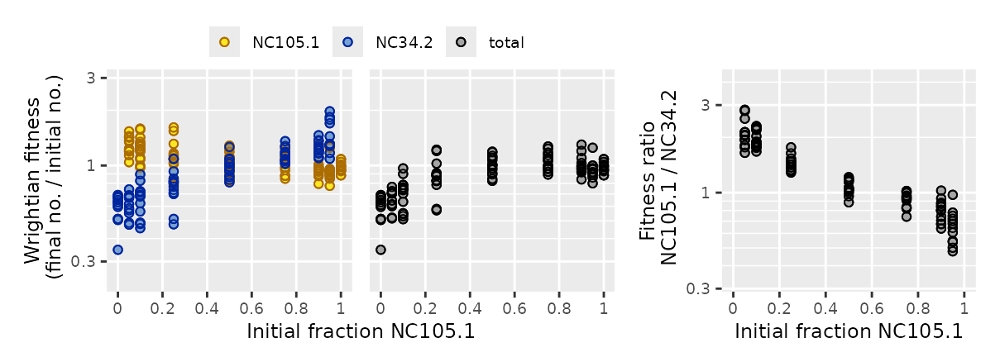
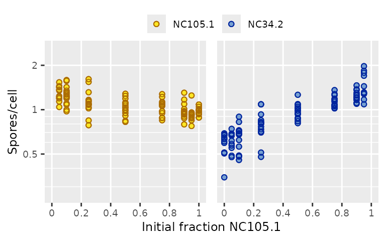

It can be very useful to analyze how microbial interactions affect the absolute fitness of each strain. Strains may react differently to mixing, for example (smith & Inglis 2021). But plotting strain fitness and fitting models to it can be a little tricky.
Plotting strain fitness
Total fitness and the relative ratio of strain fitnesses are fundamentally different quantities from each other, so they need their own plots and their own fitted models. But the fitness of one strain is the same kind of quantity as the fitness of another strain. They can be plotted on the same axis.
Let’s look at a dataset included in microbimixr where different natural isolates of starving Dictyostelium amoebae were mixed and allowed to form fruiting bodies together (Madgwick et al. 2018).
library(microbimixr)
fitness_dicty <-
data_Madgwick_2018 |>
calculate_mix_fitness(var_names = c(
initial_number_total = "input_cells_total",
initial_fraction_A = "input_freq_i",
final_number_total = "spores_total",
final_fraction_A = "output_freq_i",
name_A = "strain_i",
name_B = "strain_j"
))Here we’re measuring fitness as the number of cells that survived as spores instead of dying and becoming part of the fruiting body’s stalk. There are a bunch of different strain pairs in the dataset. Let’s focus on one of them:
fitness_pair <- subset(fitness_dicty, name_A == "NC105.1" & name_B == "NC34.2")
plot_mix_fitness(fitness_pair, mix_scale = "fraction")
Here the strain fitness plot shows that both strains produce more spores when they’re rare (because they contribute fewer cells to the stalk). That result isn’t visible in the plots of total fitness or fitness ratio. The fitness ratio plot shows that sporulation is negatively frequency-dependent, but it doesn’t show how much each strain contributes to that.
Strain fitness plots are often crowded, so it can be useful to use
the facet_strains argument:
plot_strain_fitness(fitness_pair, ylab = "Spores/cell", facet_strains = TRUE)
References
Madgwick PG, Stewart B, Belcher LJ, Thompson CRL, and Wolf JB (2018) Strategic investment explains patterns of cooperation and cheating in a microbe. PNAS 115: E4823-E4832. https://doi.org/10.1073/pnas.1716087115
smith j and Inglis RF (2021) Evaluating kin and group selection as tools for quantitative analysis of microbial data. Proceedings B 288: 20201657. https://doi.org/10.1098/rspb.2020.1657